Gambar kerja struktur gedung 4 lantai (62 lembar)
Satu set gambar kerja gedung empat lantai: denah dan tampak, denah kolom, balok, pelat, tie beam, fondasi tiang dan pile cap, tangga, lift, potongan portal, sampai detail penulangan dan kuda-kuda baja.
- Acara atau tempat
- Tugas besar Menggambar Struktur Bangunan 2, Universitas Jambi
- Tahun
- 2026
- Peran saya
- Penggambar (tugas individu).
- Hasil
- 62 lembar A3: arsitektur, struktur atas, fondasi, detail
- Perangkat lunak
- Autodesk Revit, AutoCAD
- Jenis
- Gambar/DED
Isi set gambar
| Kelompok gambar | Lembar | Isi |
|---|---|---|
| Arsitektur | 11 | Denah kusen tiap lantai, tampak depan, kanan, kiri, belakang, denah atap dan rooftop |
| Struktur atas | 17 | Denah kolom, balok, pelat lantai, dan tie beam tiap lantai, termasuk denah parsial |
| Fondasi | 6 | Denah fondasi, fondasi parsial, dan pile cap |
| Potongan | 4 | Potongan A, potongan B, potongan portal A-A dan B-B (elevasi −1,20 sampai +16,00 m) |
| Detail | 20 | Kolom, balok, pelat, pile cap, tie beam, tangga, lift, kuda-kuda baja, dan kusen |

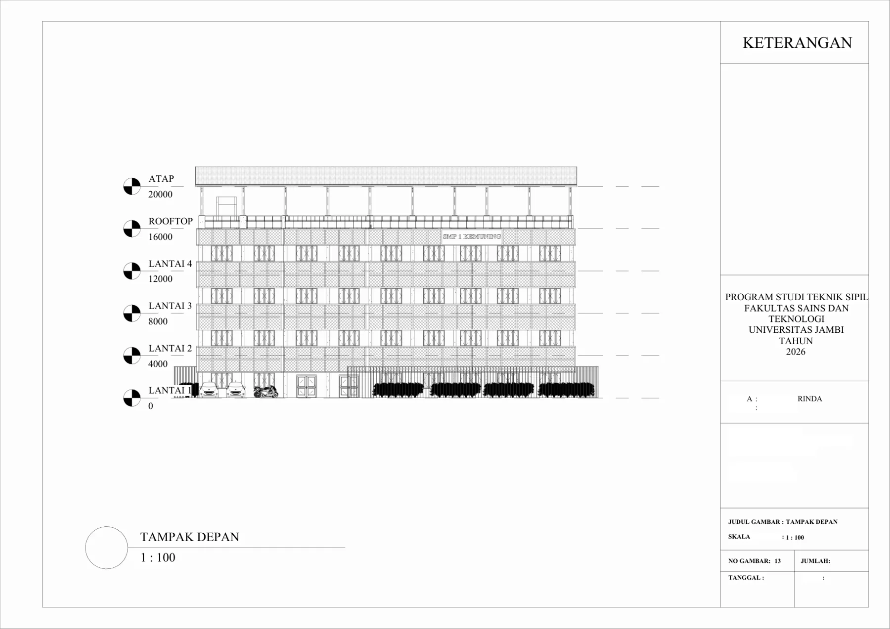

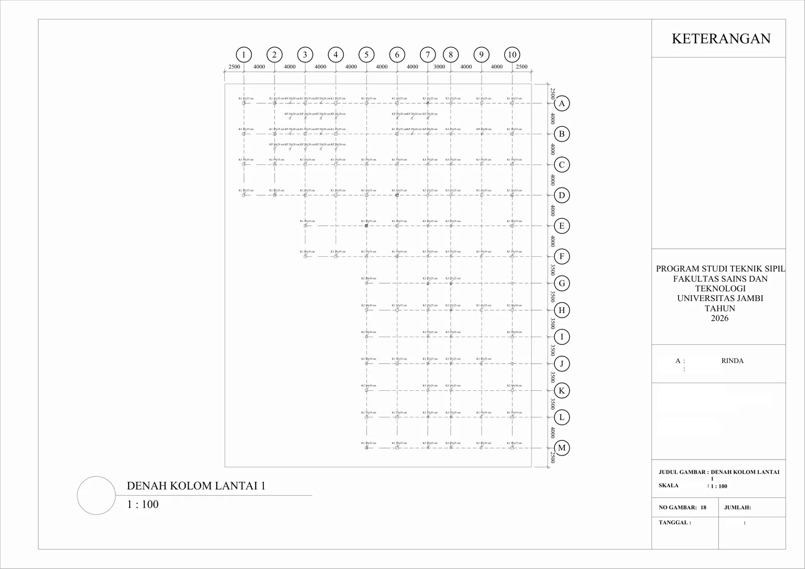

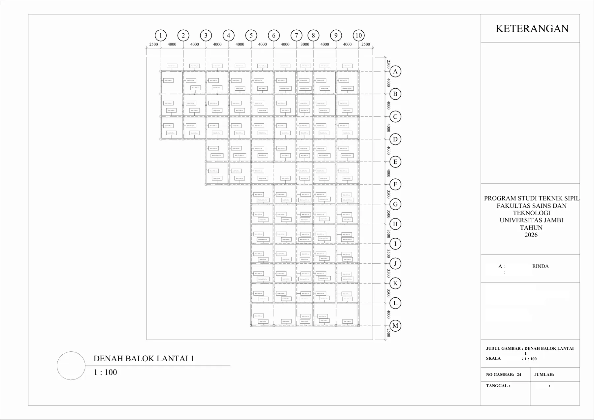

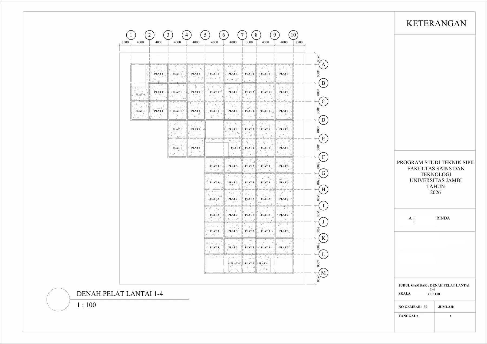

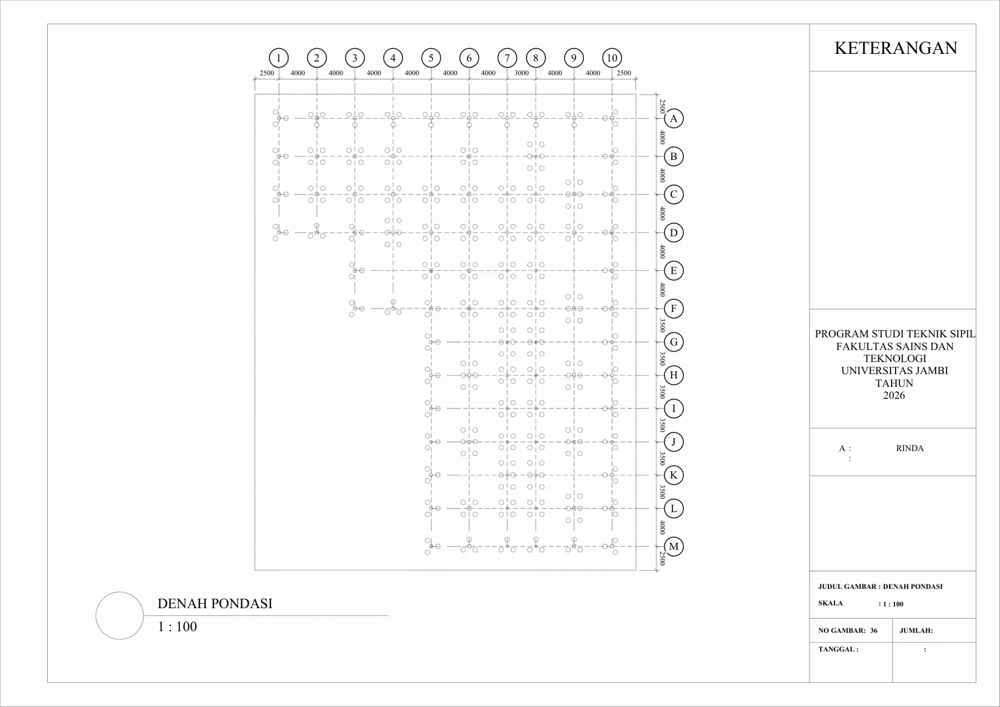

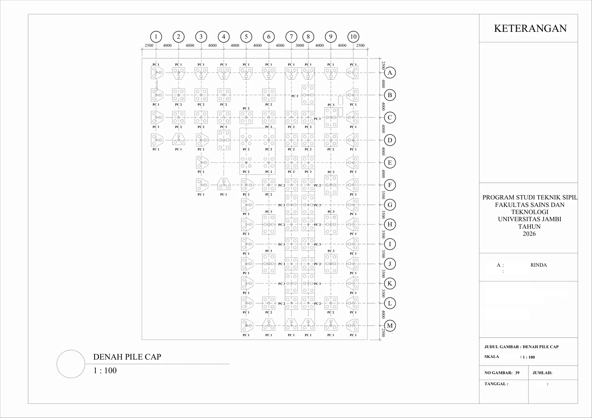

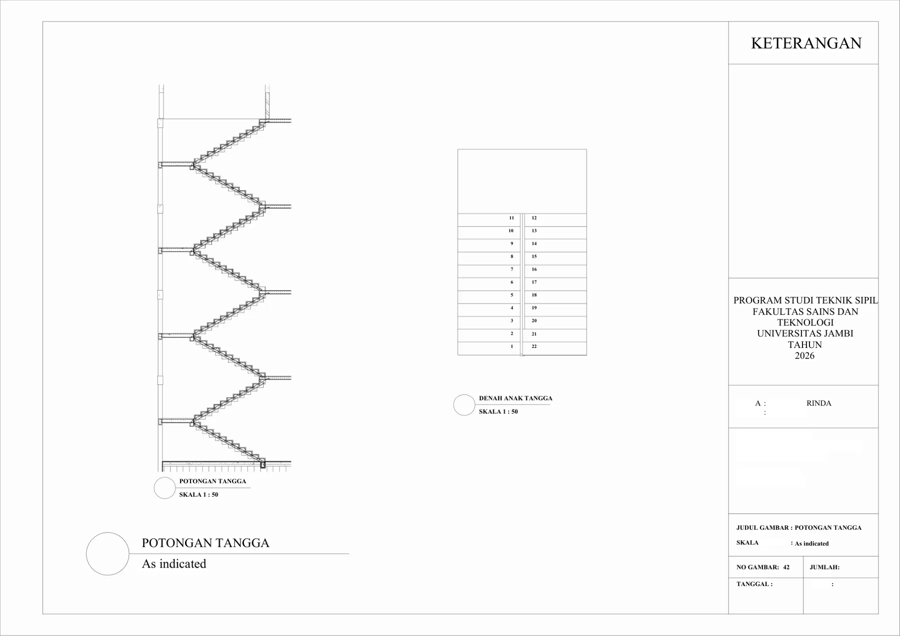

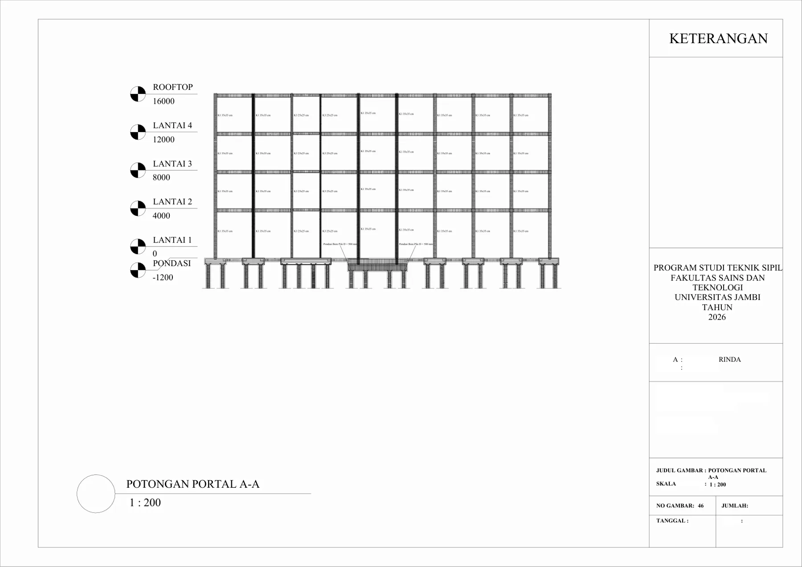

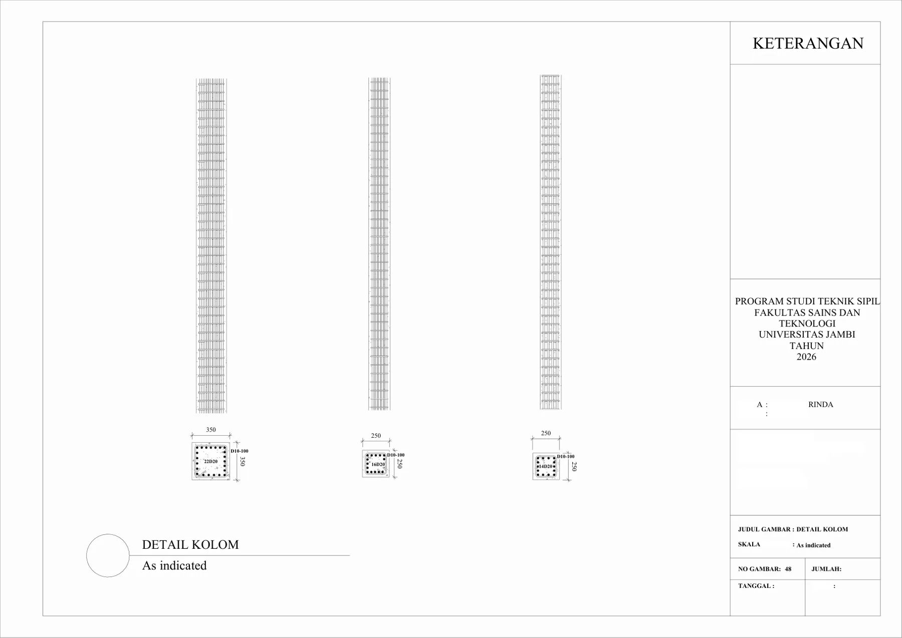

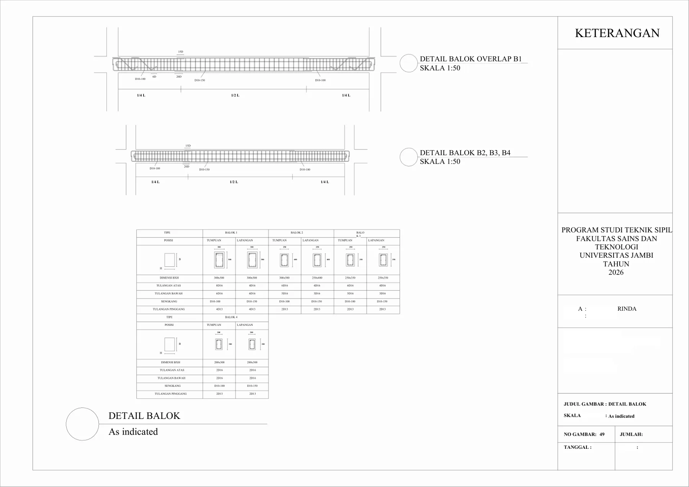

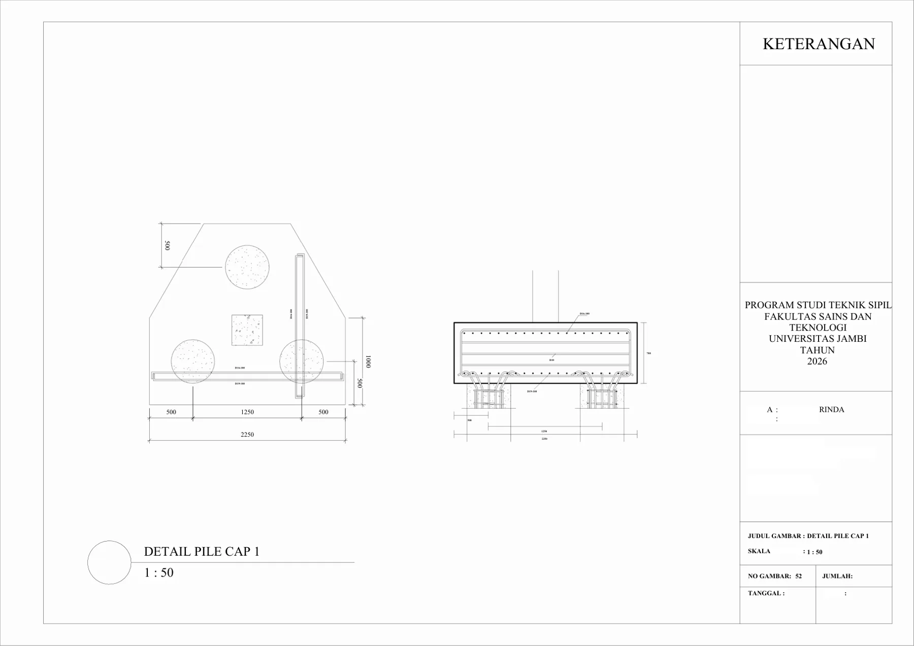

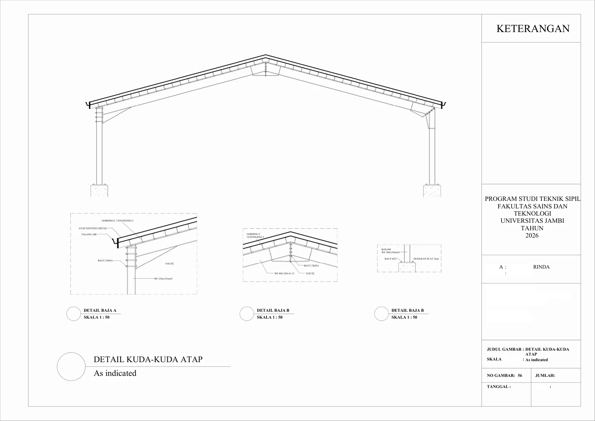
Berkas dan tautan
12 lembar pilihan (PDF vektor, 9 MB)
Kop gambar di pratinjau dipotong dan NIM serta nama dosen dan asisten dihapus dari PDF (redaksi teks).